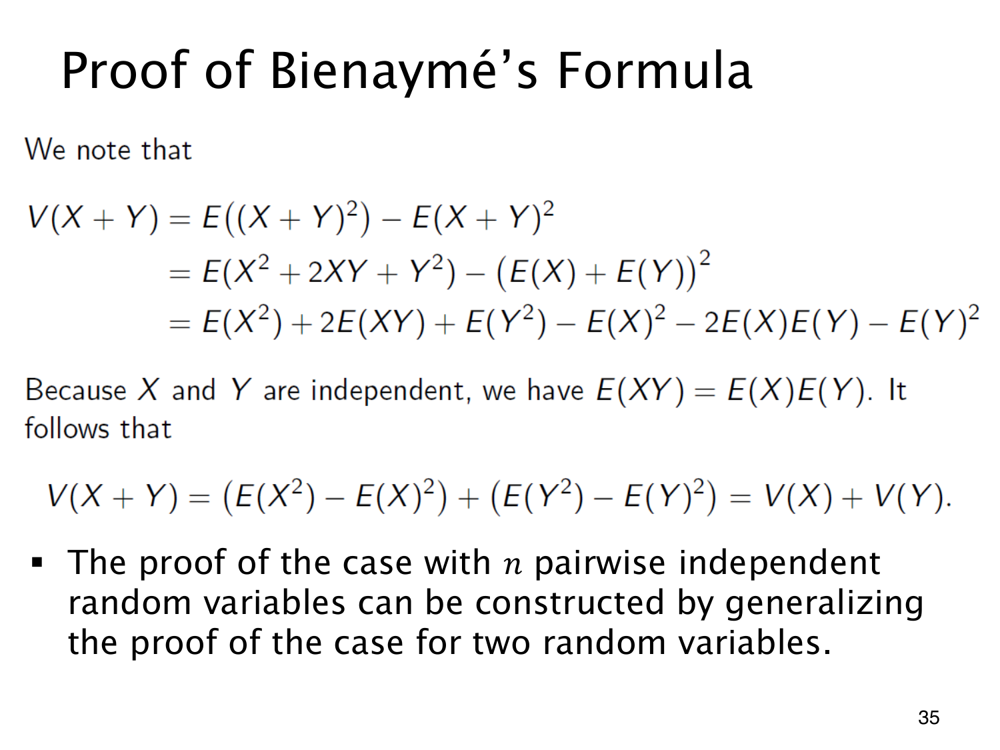

L1.11 · 第 35 页讲解原文
查看这一页课件

在哪一步消去方差交叉项
先不假设独立，从二阶矩公式展开：
V(X+Y)=E[(X+Y)2]−[E(X+Y)]2=E(X2)+2E(XY)+E(Y2)−[E(X)]2−2E(X)E(Y)−[E(Y)]2=V(X)+V(Y)+2[E(XY)−E(X)E(Y)].
此前只用平方展开和期望线性性。独立性在最后才发挥作用，使 E(XY)=E(X)E(Y)，留下 V(X)+V(Y)。
对 n 个变量，直接展开同样得到
V(i∑Xi)=i∑V(Xi)+2i<j∑[E(XiXj)−E(Xi)E(Xj)].
两两独立让每一对交叉项为 0，已经足够；要把整个联合分布完全拆开，通常需要更强的独立性。
这里不宜在没有依据时套用两变量结论作归纳。两两独立未必保证“前 n−1 个变量的总和”与最后一个变量独立，直接展开却能逐对消去交叉项。